Facetrain Experiments
Paul Nechifor
24 April 2014
Overview
- Description of Parts
Experiments
- Initial Example
- Sunglasses Example
- Effects of Splitting
- Number of Instances
- Multiple Output Units
- Visualizing Hidden Units
C Source Code
- Written in 1994.
What it does:
- Reads the lists.
- Computes the target value for every image.
- Trains the network. And others...
- I modified it so that everything is read on input.
CoffeeScript Wrapper
- It's a Node.js package.
- Written so that experiments can be more flexible.
- Uses the
facetrainbinaries. - Records output from the binaries for processing.
- Splits the lists dynamically.
- Assigns target values.
Plots
- Generated with Matplotlib from Python.
- Example:
from pylab import *
import sys, json
data = json.loads(sys.stdin.read())
subplot(211)
plot(data['epoch'], data['trainperf'], 'r', label='training')
plot(data['epoch'], data['t1perf'], 'g', label='validation')
plot(data['epoch'], data['t2perf'], 'b', label='test')
ylabel('percent correct')
legend(bbox_to_anchor=(0.0, 1.02, 1.0, 0.102), loc=3,
ncol=3, mode="expand", borderaxespad=0.0, frameon=False)
...1. Initial Example
- only straight face orientation
- only the 32×30 images (960 input units)
- 4 hidden units
- 1 output unit
- 80 iterations (called epochs)
- goal is to recognize the person with the id
glickman
Rewritten in CoffeeScript as:
facetrain = new Facetrain
facetrain.options
.filter (image) -> image.head is 'straight'
.scale 4
.hidden 4
.output 1
.size [32, 30]
.split [0.444, 0.333, 0.223]
.epochs 80
.targetFunc (image) ->
if image.person is 'glickman' then [0.9] else [0.1]
facetrain.train (err, network) ->
throw err if err
plot = __dirname + '/../plots/perf-and-error.py'
util.pythonPlot plot, util.putImage(__filename, 'svg'),
network.performance, (err) -> throw err if errRuns in 1 second (after disk caching).
And generates the plot:
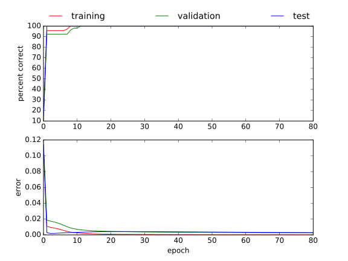All sets are corectly classified in about 10 iterations.
2. Sunglasses Example
- Same as before, but the goal is to recognize if the person is wearing sunglasses.
- The results are poorer.
3. Effects of Splitting
- Normally, the images are randomly split in 3 sets.
- In the original
facetrainthe spliting is static. - Does the splitting matter much?
- The previous example is now run 100 times, plotting only the testing set.
- Runs in 58 seconds.
- Results: with the few instances provided, the splitting matters.
Happy Faces
- Similar example, but classifying happy faces.
- After multiple iterations the error grows.
But if validation set is taken into account, the overfitting stops.
4. Number of Instances
- Visualising the effects of fewer training instances.
- Running the sunglasses example.
- Results: as expected.
5. Multiple Output Units
- Recreating the book example.
- 3 hidden units.
- 4 output units (up, right, straight, left).
- Stopping after every epoch to grab the hidden units representation.
The code used:
facetrain = new Facetrain
facetrain.options
.hidden 3
.output 4
.targetFunc (image) -> [
if image.head is 'up' then 0.9 else 0.1
if image.head is 'right' then 0.9 else 0.1
if image.head is 'straight' then 0.9 else 0.1
if image.head is 'left' then 0.9 else 0.1
]
.interrupt true
...Example Classifications
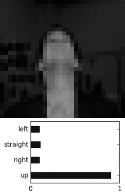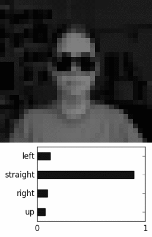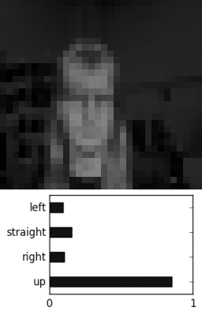Correct classifications:
 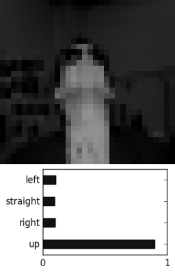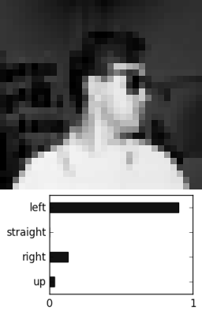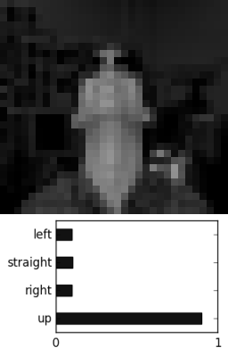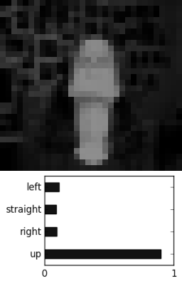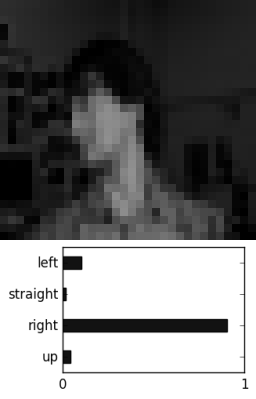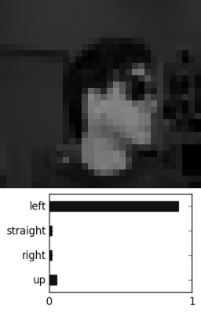
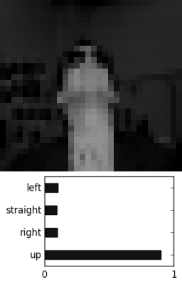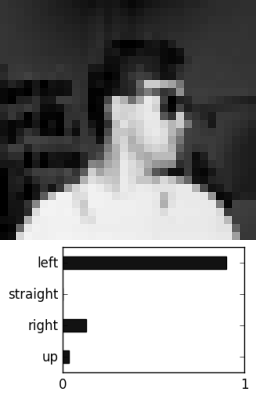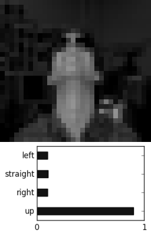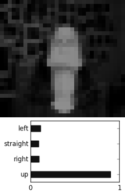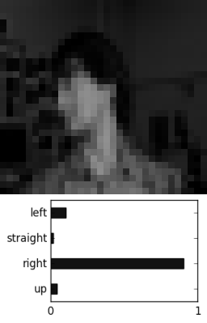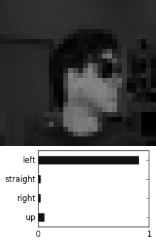Correct classifications:
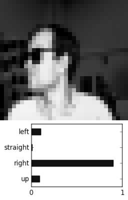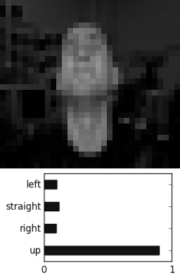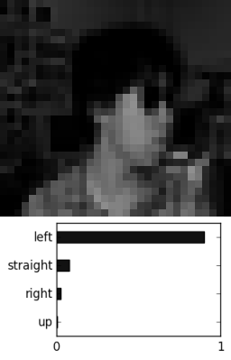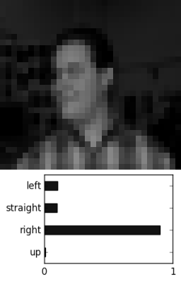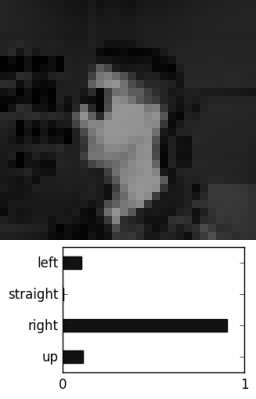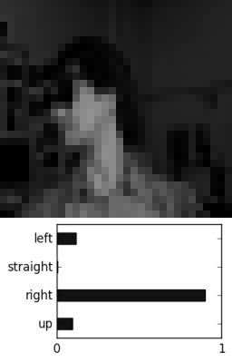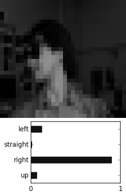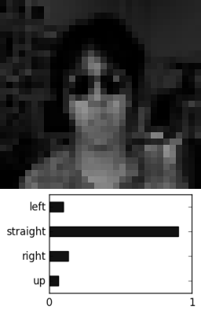Incorrect classifications:
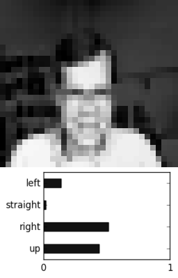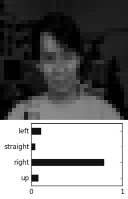 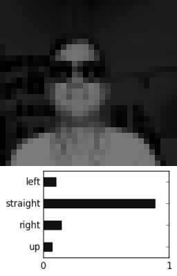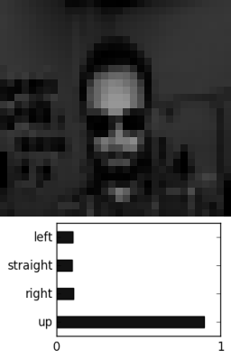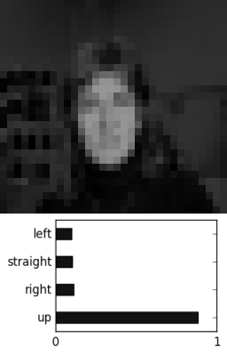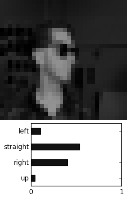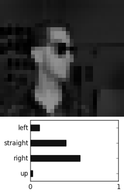
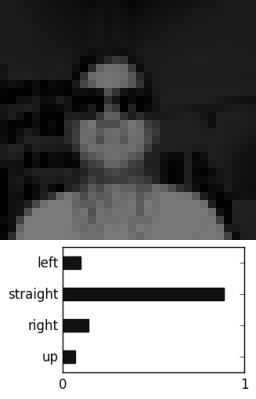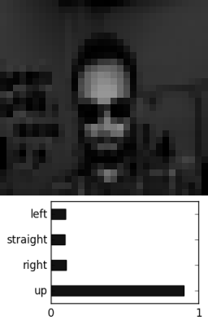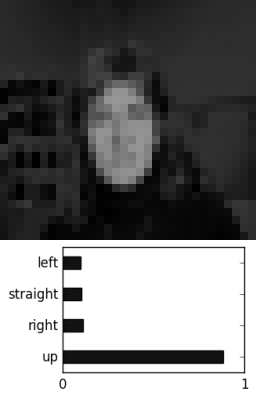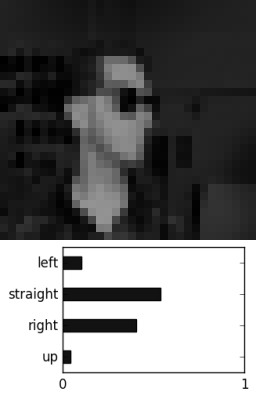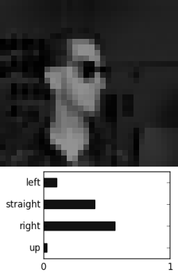Own Face Classification
- The results aren't so good.
- It's possible the different setup affects them.


6. Visualizing Hidden Units
- Trying to see if the weights have recognizable patterns.
- Classifying happy faces and stopping after every epoch to grab images of the weights.
- Result: no recognizable patterns emerge.
First epoch:
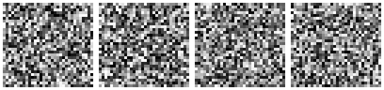Last epoch:
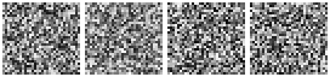Animation for all (subltle changes):
- Does varying the number of hidden units produce linked results?
- Running head orientation classification example.
- The images should be similar to those in the “Machine Learning” book, but aren't.
- Result: again, no recognizable patterns emerge.
3 hidden:
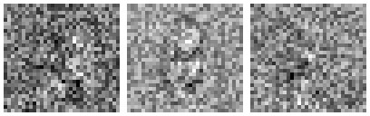4 hidden:
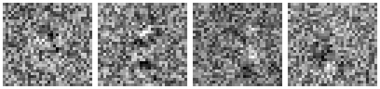5 hidden:
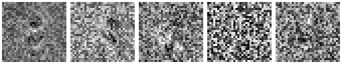References
- Book: “Machine Learning” by Tom Mitchell
- Source code:
http://www.cs.cmu.edu/~awm
/15781/2003/hw3/face/
My Works
- Repo for project:
https://github.com
/paul-nechifor/facetrain